도심 환경
- urban_adjacent_cutin - 인접 차량 cut-in
- urban_lead_sudden_braking - 전방 차량 급제동
- urban_stop_and_go_reveal - 정체 차량 reveal
VLM prior를 CARLA control candidate로 변환해 같은 사건에서 두 조건을 비교합니다.
Experiment structure
새 GIF는 `long_gif_20260522_60s` run에서 생성했습니다. 각 case는 No-GUIDANCE와 GUIDANCE를 나란히 보여주는 24초 side-by-side 대표 trial입니다.
Core visual evidence
진입로 합류와 속도-간격 압박은 정량 비교의 핵심 case입니다. 아래 GIF는 새로 생성한 24초 side-by-side 대표 trial입니다.

진입로 합류 조건에서 No-GUIDANCE는 합류 이후 늦게 반응하며 짧은 TTC와 높은 collision trial rate를 보입니다. GUIDANCE는 선제적으로 gap을 만들며 TTC margin을 확보합니다.
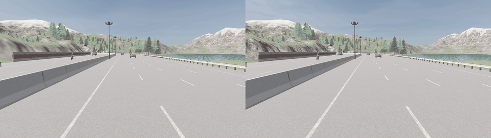
속도-간격 압박 조건에서 No-GUIDANCE는 속도 차이로 closing risk가 커집니다. GUIDANCE는 gap을 먼저 확보해 TTC < 5s와 collision trial을 줄이는 방향을 보입니다.
Scenario-by-case GIF matrix
각 GIF는 같은 사건을 No-GUIDANCE와 GUIDANCE 조건으로 side-by-side 비교합니다. 왼쪽은 No-GUIDANCE, 오른쪽은 GUIDANCE 조건입니다.
01 Urban downtown
저속 도심 교통에서 cut-in, 급제동, stop-and-go reveal을 확인합니다.
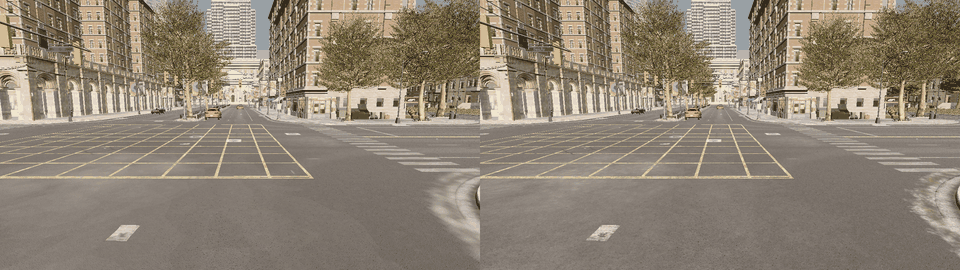
전방/인접 차량이 ego lane으로 진입하는 도심 cut-in 상황입니다.
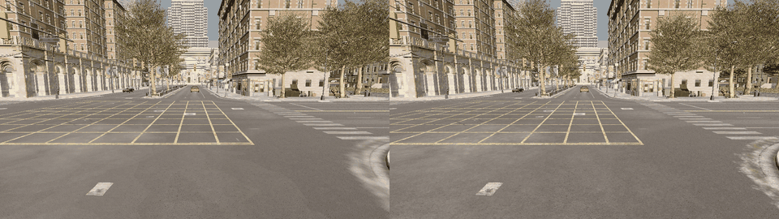
전방 차량이 갑자기 감속할 때 ego 반응과 following string 변화를 관찰합니다.
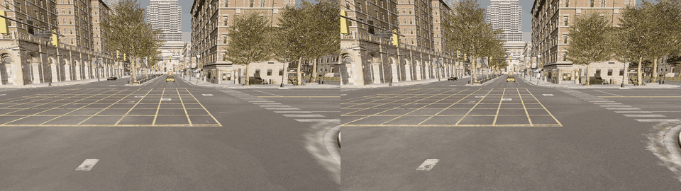
앞차가 빠지며 저속/정체 차량이 드러나는 상황을 비교합니다.
02 Arterial motorway
중고속 조건에서 기본 following, 진입로 합류, 속도-간격 압박을 확인합니다.
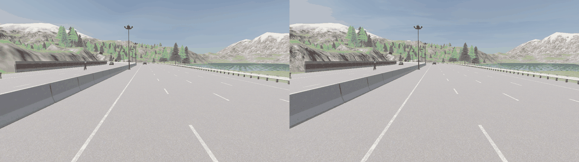
정상 following 상황에서 불필요한 강개입 없이 안정적인 차간 반응을 보는 보조 case입니다.
합류 차량이 ego lane에 들어오는 상황에서 선제적 gap formation이 나타나는지 확인합니다.
속도 차이와 짧은 gap으로 closing risk가 커지는 stress 조건입니다.
03 Highway
고속 moving lead, cut-in, dense traffic string에서 shockwave 가능성을 봅니다.
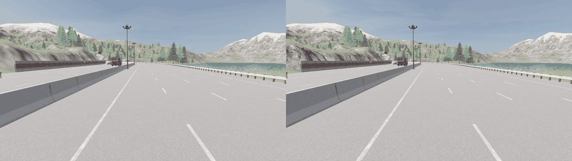
고속 조건의 기본 following 안정성을 확인합니다.
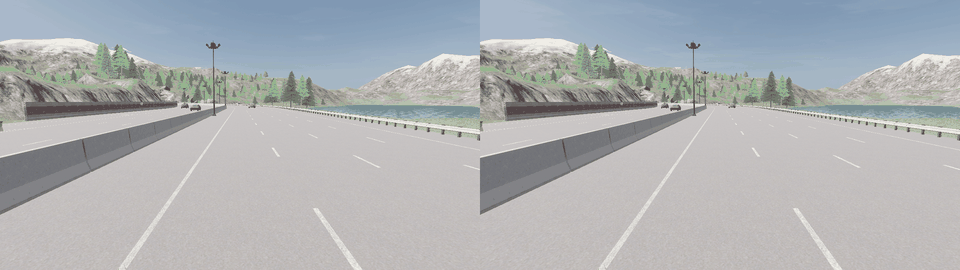
고속 cut-in에서 더 큰 안전거리와 완만한 감속 반응이 필요한 case입니다.
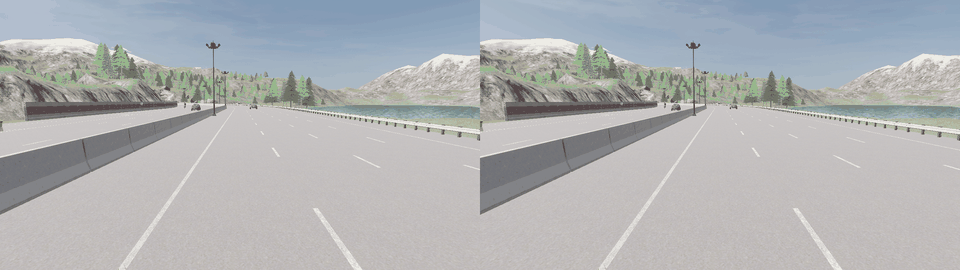
following vehicle string으로 위험과 감속 충격이 전파되는지 확인합니다.
04 Visibility and perception
가시성 저하와 perception noise에서 보수적 trajectory-prior가 어떻게 반응하는지 확인합니다.
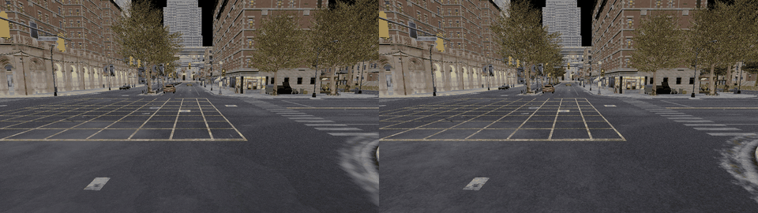
안개 환경에서 graph/perception confidence가 낮아질 때의 반응을 봅니다.
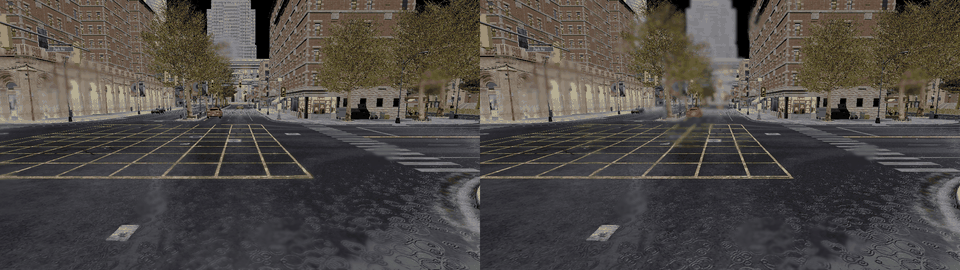
비 환경에서 perception degradation과 gap response를 함께 확인합니다.
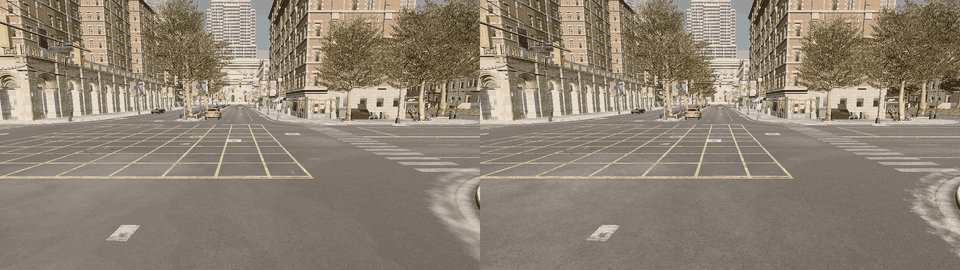
bbox/depth/edge-gap noise 또는 fallback stress가 있는 cut-in case입니다.
Exact source-of-truth metrics
현재 정량 claim은 진입로 합류와 속도-간격 압박 두 case에 한정합니다. 다른 case GIF는 scenario coverage와 qualitative visual evidence입니다.
| Case | Metric | No-GUIDANCE | GUIDANCE | 변화 |
|---|---|---|---|---|
| 진입로 합류 | Ego min TTC | 1.31s | 7.05s | 안전 여유 증가 |
| 진입로 합류 | Ego TTC < 5s ratio | 0.454 | 0.029 | 위험 구간 감소 |
| 진입로 합류 | Ego TTC < 1.5s ratio | 0.045 | 0.0007 | 고위험 구간 거의 제거 |
| 진입로 합류 | Ego collision trial rate | 0.560 | 0.013 | 충돌 trial 크게 감소 |
| 진입로 합류 | Ego excessive accel | 212.7 | 77.0 | 급가속 감소 |
| 진입로 합류 | Ego excessive decel | 66.8 | 2.1 | 급감속 크게 감소 |
| 진입로 합류 | Ego jerk | 4.53 | 2.59 | 승차감 proxy 개선 |
| 속도-간격 압박 | Ego min TTC | 0.96s | 15.62s | 안전 여유 크게 증가 |
| 속도-간격 압박 | Ego TTC < 5s ratio | 0.484 | 0.000 | 위험 구간 제거 |
| 속도-간격 압박 | Ego TTC < 1.5s ratio | 0.093 | 0.000 | 고위험 구간 제거 |
| 속도-간격 압박 | Ego collision trial rate | 0.853 | 0.000 | 충돌 trial 제거 |
| 속도-간격 압박 | Ego excessive accel | 227.2 | 114.6 | 급가속 감소 |
| 속도-간격 압박 | Ego excessive decel | 50.6 | 36.6 | 급감속 감소 |
| 속도-간격 압박 | Ego jerk | 10.55 | 5.21 | 승차감 proxy 개선 |
Metric visualization
빨간색은 No-GUIDANCE, 초록색은 GUIDANCE입니다. 영상 속 점/궤적과 아래 chart 색상이 같은 의미를 갖습니다.
GUIDANCE 조건에서 두 핵심 case 모두 TTC margin이 커졌습니다.
GUIDANCE 조건에서 collision trial rate가 크게 낮아졌습니다.
TTC < 5s와 TTC < 1.5s 비율은 낮을수록 안전합니다.
GUIDANCE는 excessive accel/decel과 jerk도 함께 낮추는 방향을 보였습니다.
Claim boundary
본 결과는 controlled CARLA simulation diagnostic입니다. GUIDANCE가 진입로 합류와 속도-간격 압박 조건에서 No-GUIDANCE보다 더 큰 TTC margin, 더 낮은 collision trial rate, 더 낮은 harsh-driving proxy를 보였다는 시뮬레이션 기반 근거를 제공합니다.
다만 실제 차량 제어 성능 인증이나 모든 주행 상황에 대한 일반화 검증은 아니며, 추가 scenario family와 real-world validation이 필요합니다.